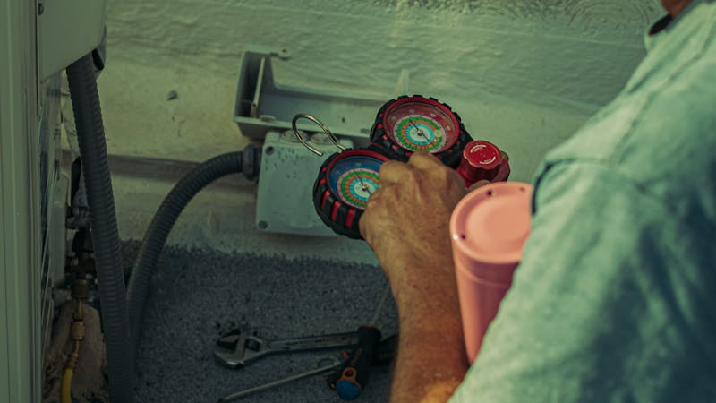

AC Berbau? Ini Penyebab & Cara Mengatasinya

Masuk ruangan dan disambut bau tidak sedap dari AC? Ini pasti tidak nyaman. Kenali penyebab dan solusinya:
1. Bau Apek / Jamur
Penyebab: Kelembaban excess di dalam unit indoor menyebabkan jamur tumbuh.
Solusi: Cleaning AC mendalam (deep clean) untuk mengangkat jamur. Pakai anti-jamur spray.
2. Bau anyir / Bakteri
Penyebab: Bacteria menumpuk di filter dan coil yang kotor.
Solusi: Cuci filter dengan air mengalir. Deep cleaning untuk membunuh bakteri.
3. Bau Telur Busuk
Penyebab: Kemungkinan kebocoran freon atau masalah pada kompresor.
Solusi: Segera hubungi teknisi! Ini bisa berbahaya.
4. Bau Lembap
Penyebab: Air condensate tidak mengalir dengan baik, Genangan di dalam unit.
Solusi: Periksa dan bersihkan drain hole. Pastikan unit terinstall benar.
5. Bau Terbakar
Penyebab: Overheating komponen atau kotoran menumpuk di motor.
Solusi: Matikan AC sofort dan hubungi teknisi. Dangerous jika diabaikan.
🛡️ Pencegahan
- Cleaning AC rutin setiap 3 bulan
- Ganti atau cucifilter setiap 2-4 minggu
- Jaga kelembaban ruangan dengan baik
- Nyalakan kipas saat AC off untuk sirkulasi udara
- AC tidak used selama lama, bersihkan dulu
Butuh Service AC?
Tim teknisi AClean siap membersihkan AC Anda. Gratis ongkos kirim Tangerang Selatan!
Chat Sekarang →